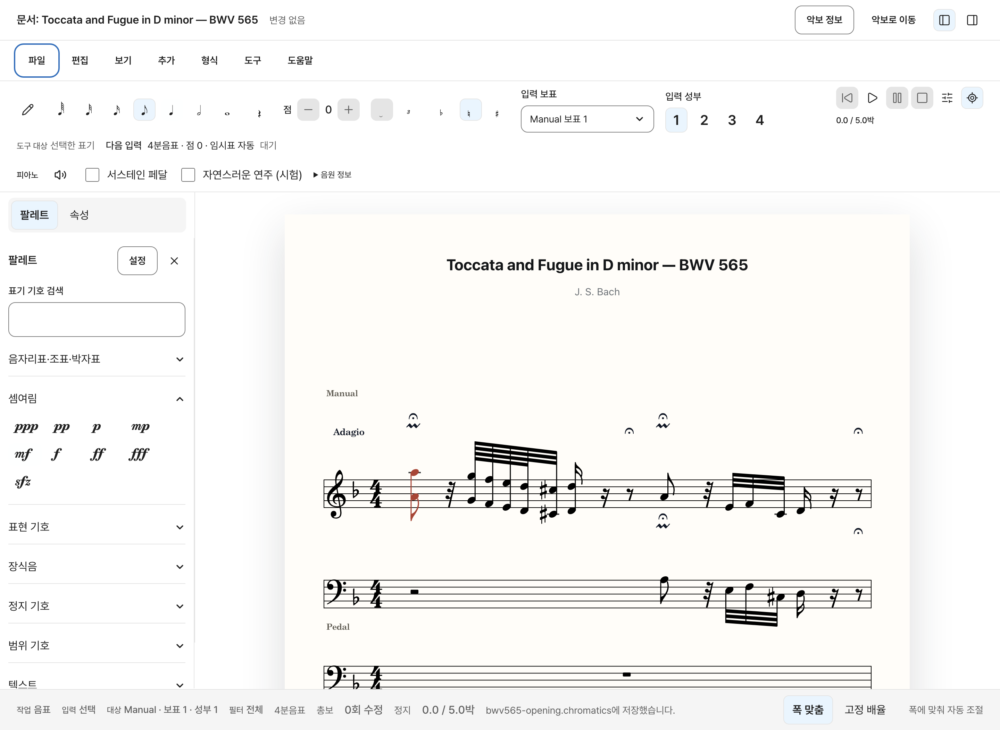
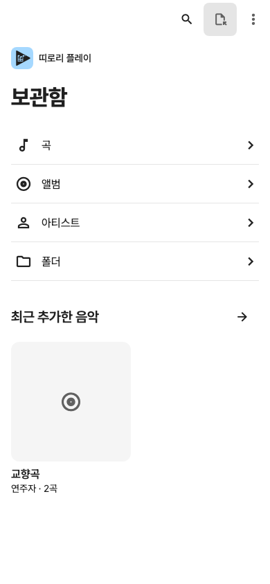
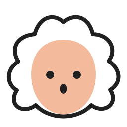
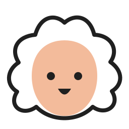

01 · 만들기
떠오른 선율을 적어요
Studio에서 음표를 입력하고, 악보를 읽으며 곡의 흐름을 다듬어요.
Studio 만나보기띠로리와 함께하는 음악 생활
듣고, 연주하고, 만들어보는 일.
당신의 작은 시도가 계속되도록
띠로리가 곁에서 함께할게요.



음악은 일상이 되니까.BWV 565를 불러온 실제 Studio 화면과 Play 개발 화면을 조합한 소개 이미지예요.
우리가 만들고 싶은 공간
음악을 좋아하는 마음에는 여러 모습이 있어요. 떠오른 선율을 적는 날도, 어려운 마디를 다시 연습하는 날도, 좋아하는 연주를 오래 듣는 날도 있죠.
띠로리는 그 모든 순간이 다음 시도로 이어지기를 바라요. 자신의 음악을 솔직하게 만들고, 연주하고, 듣는 도구를 차근차근 만들어갑니다.
만들 때도, 연습할 때도, 들을 때도.
각자의 역할로, 같은 마음을 담았어요.

완벽한 시작을 기다리기보다, 오늘의 음악을 한 번 더.
띠로리는 함께 시도하는 음악 문화를 꿈꿔요.
01 · 만들기
Studio에서 음표를 입력하고, 악보를 읽으며 곡의 흐름을 다듬어요.
Studio 만나보기02 · 연주하기
PDF로 준비한 악보를 Score에서 열고, 연습하며 필요한 메모를 남겨요.
Score 만나보기03 · 듣기
Play의 내 보관함에서 좋아하는 음악을 정리하고 다시 들어요.
Play 만나보기앱 사이의 파일은 직접 내보내고 가져와요. 자동 연결이나 동기화 기능은 제공하지 않아요.
띠로리 스튜디오에서 첫 음을 적어보세요.